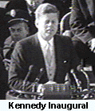

|
|
|
|
Excerpted from an essay by Richard Reeves:
Were there ever aspects of his character at war with each other?
There certainly were. John Kennedy did not think that the rules applied to him and he did whatever he could get away with, including getting into the U.S. Navy without a physical examination, since there was no way he could have passed any standard medical examination. He sensed, correctly, I think, that if he did not participate in World War II, in the great adventure, the great shared experience of his generation, then he was not going to have much of a public life in this country. So he wanted in. But, of course, to have a man with such frail health as his was as your commander could be dangerous; the John Kennedy who got to be commander of a PT-109 never should have been there. However, when PT-109 was run down by a Japanese destroyer, the lieutenant who never should have been there swam six miles holding the belt, in his teeth, of a badly burned man named Pappy McNulty, and saved his life -- and then went back into the dark Pacific to try to save others. He lost his boat, but saved most of his crew...
Could a person of Kennedy's character survive the kind of political climate that now exists?
No. There is no way, not so much because of his character but, .. because of his health.... John Kennedy had Addison's disease (a withering of the adrenal glands), which was a terminal disease until maintenance treatment was discovered in 1940. That year, before Kennedy knew he had the illness, a British doctor discovered that it could be treated with cortisone, which would replace adrenaline... The cortisone was extremely expensive at the beginning, and the Kennedys kept quantities of the drug in safety deposit boxes around the world. Until artificial cortisone was developed years later, only a rich person could survive on the regime that JFK did -- day by day for the rest of his life.
In addition to that, he had a degenerative back problem  that had nothing to do with football or the war -- those campaign stories were not true. It was a birth defect, and it was so bad that at a point in 1954, when he was a senator, he gambled on surgery in New York Hospital. He was told he probably would not survive because trauma triggers Addison's episodes. No Addisonian had ever survived traumatic surgery. But the back pain was so great, he said he would rather die than live with it. He did survive the operation, though he was in the hospital for nine months afterward. That bit of medical history was significant enough that the Journal of the American Medical Association, in November 1955, ran a report without names on Kennedy's operation. The patient was identified as "the 37-year-old man." But anybody who knew his history, knew that John Kennedy was the thirty-seven-year-old man....
In the five years after that, and all the years after that, John Kennedy always denied that he had Addison's disease. But in fact, there was a public record that could have revealed his lie. No one in the press ever put two and two together. In the political and journalistic climate today he could not have hidden that information and thus could not have become a candidate, much less President of the United States....
Robert Louis Stevenson once said that politics is perhaps the only profession for which no preparation is considered necessary. It was true then -- it's true now. And John Kennedy has something to do with that. Whatever one thinks of him as a political figure, John Kennedy was a soaring cultural figure. On a level, I think, with the Picassos, the Freuds, the artists and scholars who change the way we look at things. And the most significant thing about John Kennedy, transcending politics, was this: he did not wait his turn. And now, no one does. Part of that was because he thought he would die young -- and he had to make his move the first chance he got. He went after the presidency out of turn and essentially destroyed the old system of selecting presidents.
Kennedy controlled every person who came in contact with him. He was a Brueghel in the sense that he created a world of his own, but instead of squeezing oil paint, he squeezed people to create his own personal world. He was at the center of all he surveyed. He enjoyed using people, and setting them against each other for his own amusement. He lived life as a race against boredom.

| Welcome | Broadcast | Essays | Forum | Quotes | Links | Home |